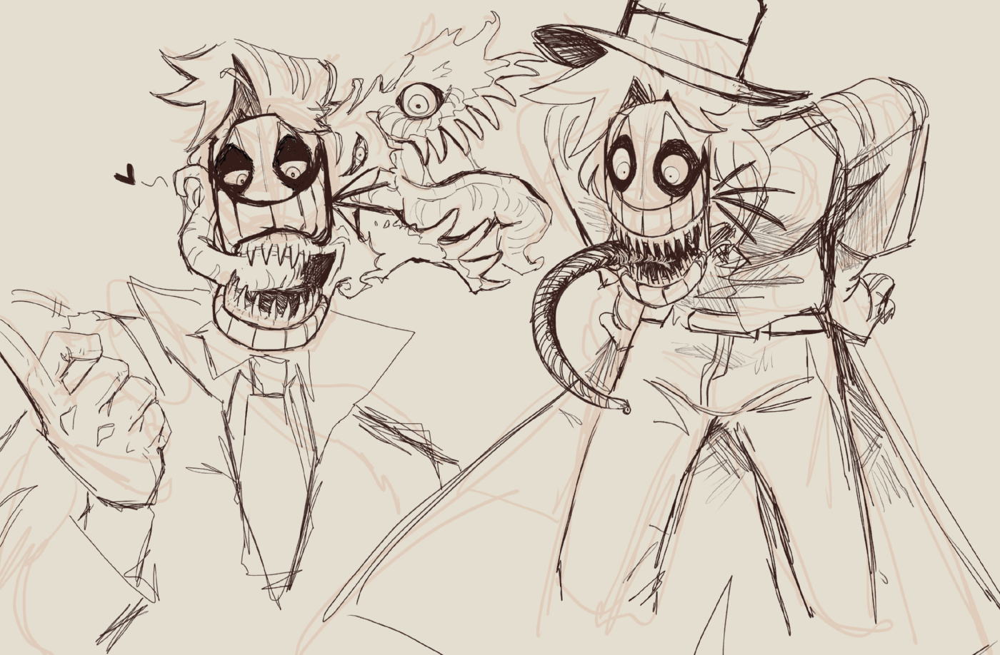

10/22/2025
Warning, I want to talk about the presumed ending of my comic and characters,
so if you don’t want spoilers I’d suggest skipping past this one:
I’ve been thinking about my main project recently, which is my surrealist graphic novel BLINK. It's been a story I've been long developing for around a decade (not something impressive, you'll find), and has a lot of (planned) allusions to Gilgamesh and Enkidu.
I think I made my first iteration of “Luis” in 2015-2016; he was a monstrous, mask-wearing lunatic scientist who experimented on himself for pleasure, and on the run from his patrol officer– my first iteration of Arthur (a character who has humorously gone essentially unchanged).
I think I made my first iteration of “Luis” in 2015-2016; he was a monstrous, mask-wearing lunatic scientist who experimented on himself for pleasure, and on the run from his patrol officer– my first iteration of Arthur (a character who has humorously gone essentially unchanged).

(The last time I drew Luis's old design, October 2024)
Over the years, their dynamic has slowly shifted to be one less solid. I consider them soulmates, both in creation and in narrative. In my mind, their lives, for better or for worse, are hopelessly entwined with one another; in every instance, their creation and eventual destruction will originate from one thing: tragedy.
Perhaps exactly opposite from my other stories, my perfect idea of BLINK would be a satisfying example of the beauty in tragedy, as well as a comfortable decline into non-normalcy. To explain, neither Luis or Arthur get “better” in the story; both fall into habits or ideals they hold for one reason or another, which eventually leads to their endings. The ending I have planned is more surrealist; both Luis and Arthur have planned “deaths” but it's not clear whether or not it actually happens. Arthur (who is my “real” protagonist in my eyes, despite the perspective being Luis’s) suffers from psychosis-esq symptoms that progressively get more intense throughout the story.
Another thing I've been thinking about is how both characters go about accepting their own identities. Both Luis and Arthur think of hetero relationships as "normalcy" but in durastically different ways. Arthur is an older man who has "successfully" performed a "normal" life, but he's always been pressured into living that life. Luis on the other hand, despite openly performing in homerotic acts with other men, rejects ever and all romantic feelings for other people. He considers it something that should not happen, and he does everything he can to avoid it from happening, fearing it will ruin both his and his potential partner's lives.
Perhaps exactly opposite from my other stories, my perfect idea of BLINK would be a satisfying example of the beauty in tragedy, as well as a comfortable decline into non-normalcy. To explain, neither Luis or Arthur get “better” in the story; both fall into habits or ideals they hold for one reason or another, which eventually leads to their endings. The ending I have planned is more surrealist; both Luis and Arthur have planned “deaths” but it's not clear whether or not it actually happens. Arthur (who is my “real” protagonist in my eyes, despite the perspective being Luis’s) suffers from psychosis-esq symptoms that progressively get more intense throughout the story.
Another thing I've been thinking about is how both characters go about accepting their own identities. Both Luis and Arthur think of hetero relationships as "normalcy" but in durastically different ways. Arthur is an older man who has "successfully" performed a "normal" life, but he's always been pressured into living that life. Luis on the other hand, despite openly performing in homerotic acts with other men, rejects ever and all romantic feelings for other people. He considers it something that should not happen, and he does everything he can to avoid it from happening, fearing it will ruin both his and his potential partner's lives.